O NEXORA é uma plataforma empresarial que centraliza o trabalho de uma equipa num único espaço: documentos, listas de dados, formulários, tarefas, processos de aprovação (workflows), sites internos, notícias, pesquisa global e um assistente de IA. Foi desenhado para substituir ferramentas como o SharePoint com uma interface moderna e simples.
| Conceito | Descrição |
|---|---|
| Organização | O espaço de trabalho da empresa (ex.: "XPTO"). Todos os dados — documentos, listas, workflows — pertencem a uma organização e são isolados das outras. |
| Utilizador | Uma pessoa com a sua própria conta (email + palavra-passe). Cada pessoa deve ter a sua conta — nunca se partilham credenciais, porque a auditoria, permissões e notificações são individuais. |
| Função (role) | Um conjunto de permissões atribuído ao utilizador dentro da organização: Viewer, Member, Editor, Manager ou Admin (ou funções personalizadas criadas pelo admin). |
| Permissão | Uma capacidade concreta, ex.: documents.edit, users.create, workflows.manage. As funções agrupam permissões. |
| Auditoria | Registo de todas as ações relevantes (quem fez o quê e quando), visível na atividade recente do dashboard e em Administração → Auditoria. |
A interface está disponível em Português (PT-PT), English, Español, Français e Deutsch — selecionável no seletor de idioma no topo da página. Tema claro/escuro também disponível.
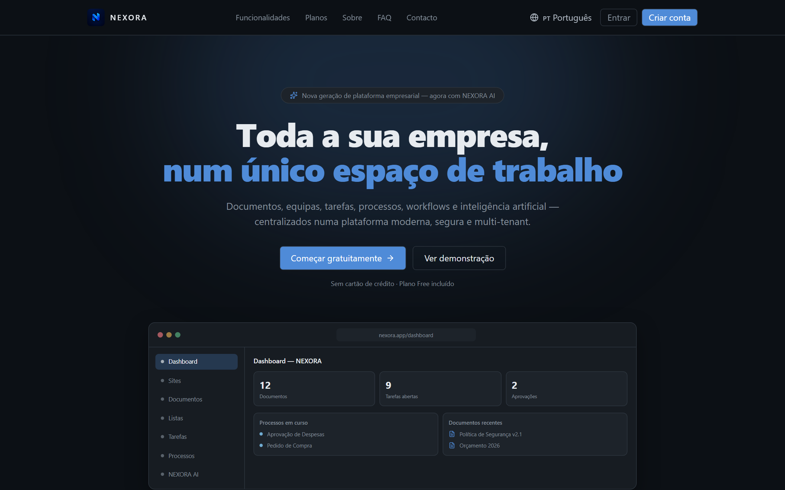
A XPTO, Lda. é uma pequena empresa de consultoria. Vai usar o NEXORA para gerir documentos de clientes, acompanhar tarefas, aprovar despesas e manter um portal interno. Tem 5 funcionários — um por cada função do sistema:
Email: ana@xpto.pt • Função: Admin
Foi ela que registou a empresa no NEXORA — ficou automaticamente como administradora. Gere utilizadores, convites, funções, configurações, faturação, auditoria e todo o conteúdo. É a "dona" da organização.
Email: bruno@xpto.pt • Função: Manager
Responsável pela operação diária: cria e gere listas de clientes, formulários, workflows e o site interno. Pode convidar novos utilizadores e consultar a auditoria, mas não pode apagar utilizadores nem gerir funções ou a faturação.
Email: diana@xpto.pt • Função: Editor
Produz e gere o conteúdo da empresa: cria e apaga documentos, estrutura listas e formulários, edita workflows, páginas e notícias do site. Não partilha documentos externamente, não convida utilizadores nem vê a auditoria.
Email: carla@xpto.pt • Função: Member
Trabalhadora operacional: carrega e edita documentos, preenche itens de listas, executa as suas tarefas e submete coisas para aprovação. Não gere estruturas (não cria listas, workflows nem sites) nem administra nada.
Email: eduardo@xpto.pt • Função: Viewer
Só consulta: vê documentos, listas, tarefas, workflows, aprovações, sites e notícias, mas não cria nem altera nada. Ideal para quem precisa de visibilidade total sem risco de modificar conteúdo — direção, auditoria externa ou consultores.
| Capacidade | Viewer (Eduardo) | Member (Carla) | Editor (Diana) | Manager (Bruno) | Admin (Ana) |
|---|---|---|---|---|---|
| Ver todo o conteúdo | ✔ | ✔ | ✔ | ✔ | ✔ |
| Criar/editar documentos e tarefas | — | ✔ | ✔ | ✔ | ✔ |
| Apagar documentos | — | — | ✔ | ✔ | ✔ |
| Partilhar documentos externamente | — | — | — | ✔ | ✔ |
| Gerir listas, formulários, workflows, páginas, notícias | — | — | ✔ | ✔ | ✔ |
| Gerir sites | — | — | — | ✔ | ✔ |
| Convidar/editar utilizadores | — | — | — | ✔ | ✔ |
| Ver auditoria, gerir definições e webhooks | — | — | — | ✔ | ✔ |
| Apagar utilizadores, gerir funções, organização e faturação | — | — | — | — | ✔ |
Este é o fluxo exato que a XPTO seguiu para pôr os 5 funcionários a trabalhar.
bruno@xpto.pt e escolhe a função Manager → "Enviar convite".diana@xpto.pt como Editor, carla@xpto.pt como Member e eduardo@xpto.pt como Viewer.O sistema gera um convite seguro com validade de 7 dias. Com servidor de email configurado, o convidado recebe o link por email. Sem email configurado, a página mostra o link com botão "Copiar" — a Ana envia-o por qualquer canal.
No primeiro acesso, o dashboard mostra um checklist de onboarding com 5 passos: carregar o primeiro documento, criar a primeira lista, criar a primeira tarefa, convidar a equipa (só aparece a quem tem permissão) e criar o primeiro workflow. Cada passo liga diretamente à ação correspondente.
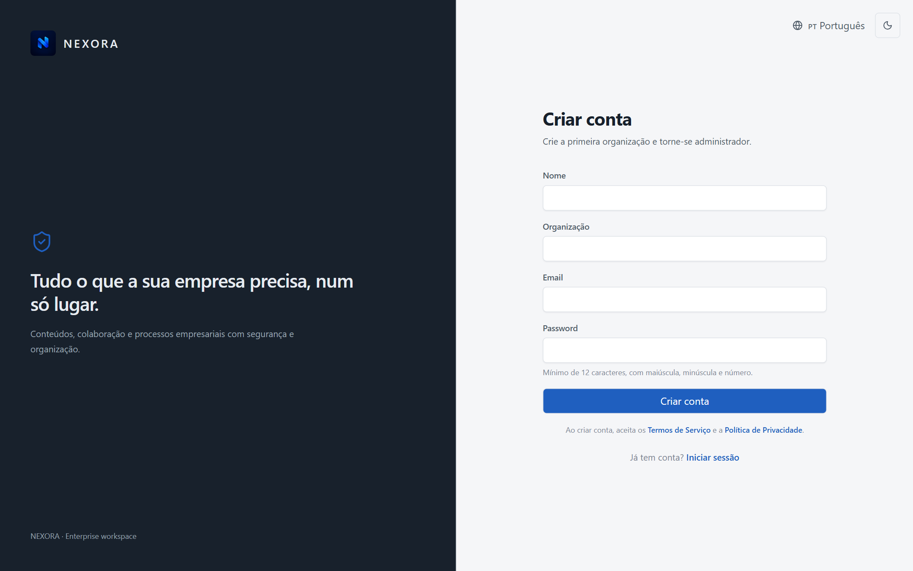
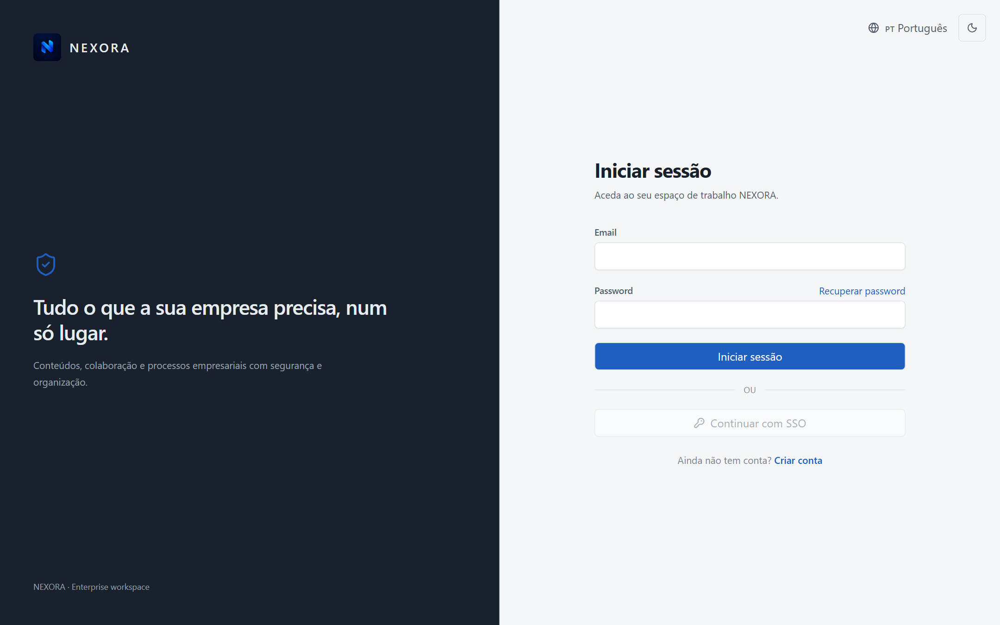
| Grupo | Itens |
|---|---|
| (topo) | Dashboard, Pesquisa |
| Trabalho | Tarefas, Aprovações, Workflows, Notificações (com contador de não lidas) |
| Conteúdo | Sites, Notícias, Documentos, Listas, Formulários |
| Ferramentas | IA, Ajuda |
| Gerir | Administração (só Ana e Bruno), Faturação, Definições, Perfil |
Em ecrãs pequenos a barra colapsa atrás do botão ☰.
Pesquisa instantânea: escrever texto pesquisa em documentos, tarefas, listas e mais; sem texto, mostra todos os destinos de navegação. Setas ↑↓ para navegar, Enter para abrir.
Disponível na barra lateral (Ajuda): ~80 artigos organizados por categoria, pesquisa, artigos relacionados e botões de ajuda contextual em várias páginas — incluindo o guia "Convidar a equipa" que descreve este mesmo fluxo.
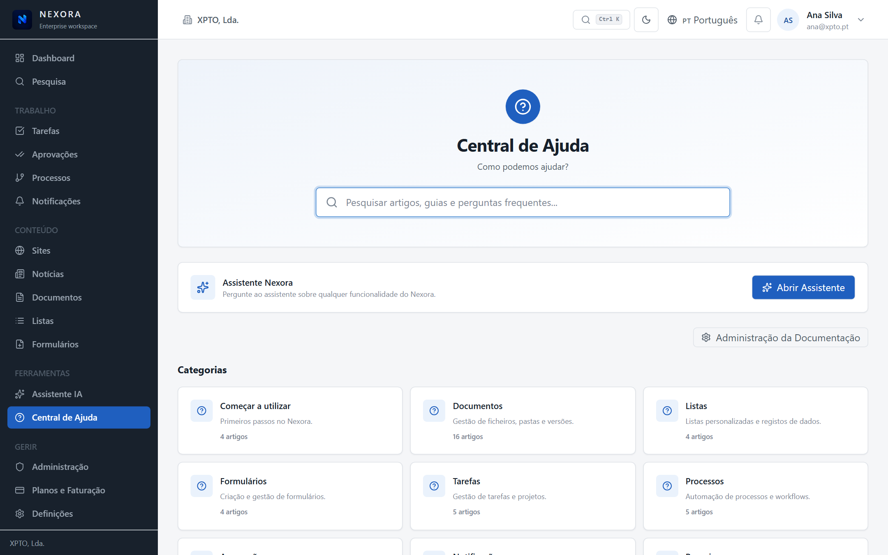
O ponto de partida diário. Mostra: saudação personalizada, ações rápidas (adicionar documento, criar tarefa, criar workflow), checklist de onboarding, anúncios da empresa, métricas da organização (documentos, utilizadores, equipas, tarefas pendentes, processos ativos, aprovações pendentes, armazenamento), atividade recente, documentos recentes e tarefas relevantes.
Timeline das últimas ações na organização, em linguagem natural — ex.: "ana criou o convite", "bruno aceitou o convite", "carla carregou o documento". Cada entrada mostra quem fez, o que fez, o tipo de recurso e a data/hora.
Além do dashboard padrão (fixo), qualquer pessoa com a permissão dashboards.manage pode criar dashboards personalizados — secções extra por cima do padrão, com widgets à escolha: métricas, documentos recentes, tarefas pendentes, notificações, atividade recente, distribuição de tarefas e links rápidos.
O Bruno criou um dashboard "Operações" com widgets de tarefas pendentes, distribuição de tarefas e atividade recente — a sua vista de gestão diária. A Carla mantém o padrão. A Ana alterna entre "Operações" e um dashboard "Direção" com métricas e notificações.
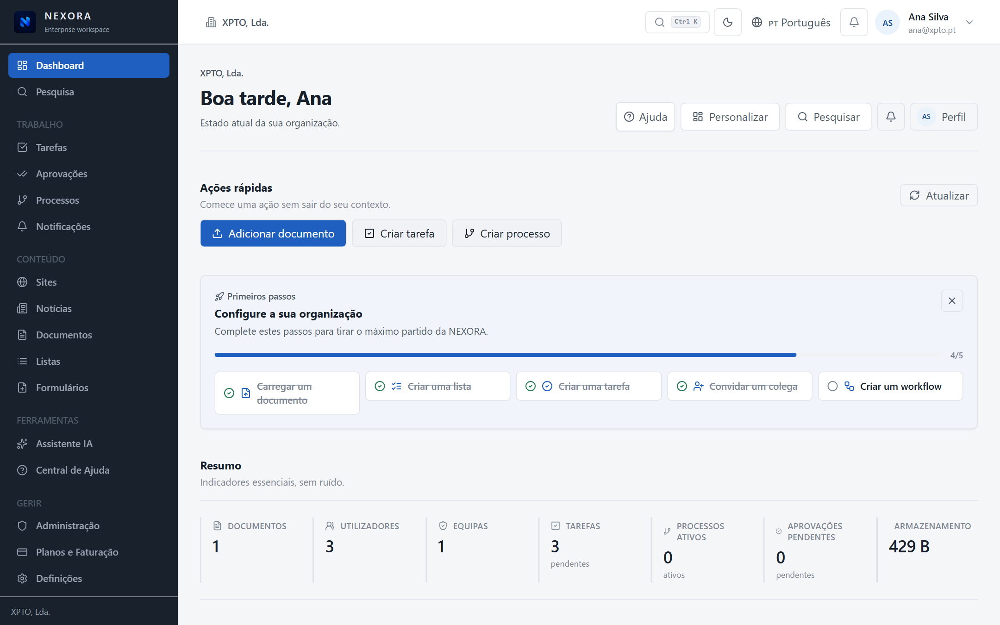
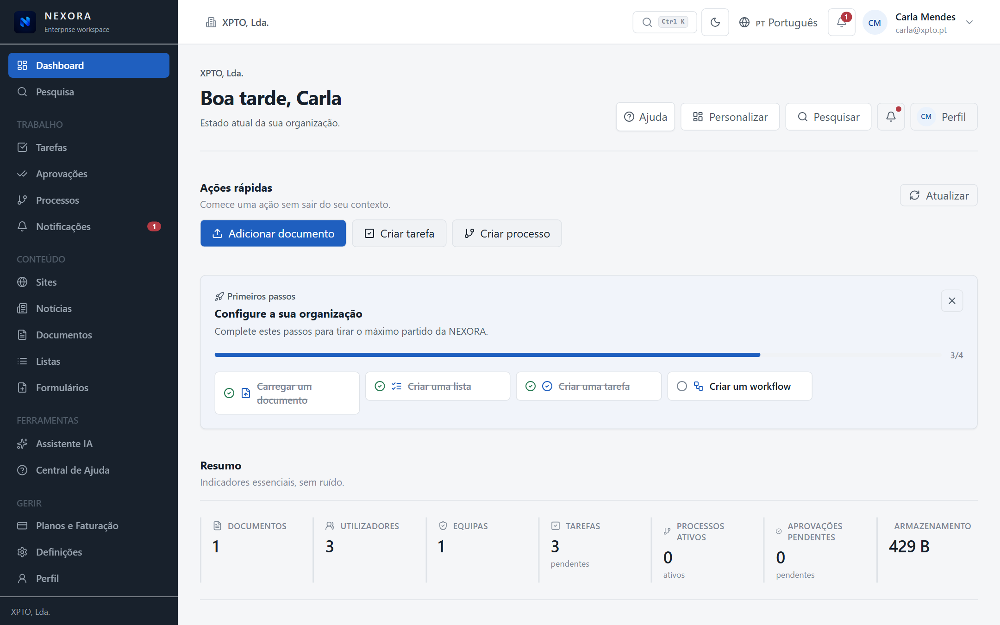
O coração do NEXORA — uma biblioteca de documentos com pastas, versões, permissões finas e partilha. Na XPTO é onde vivem os contratos, propostas e relatórios de clientes.
Clientes / ABC S.A. / Contratos), com navegação por breadcrumb e atalhos para pastas recentes e favoritas.Cada edição/carregamento cria uma nova versão com histórico completo: quem alterou, quando, e download de qualquer versão anterior. É possível restaurar uma versão antiga — o histórico nunca se perde. Na XPTO, o "Contrato ABC v3" foi restaurado depois de uma edição errada da Carla.
Discussão por documento: a Carla comenta "falta a cláusula de confidencialidade" e o Bruno responde — sem sair da página do documento.
Para evitar edições em conflito, um documento pode ser bloqueado para edição (check-out) — fica marcado como "a ser editado por X" — e depois devolvido (check-in) com a nova versão.
Campos adicionais além do ficheiro: a organização pode definir esquemas de metadados por pasta (ex.: pasta "Contratos" exige Nº de contrato, Cliente, Data de vencimento). A IA pode também sugerir metadados automaticamente (ver secção IA).
Cada documento e pasta tem uma lista de acesso:
| Concessão | Significa |
|---|---|
| Proprietário | Quem criou — controlo total. |
| Por utilizador | Ex.: "a Carla pode editar este contrato". |
| Por equipa | Ex.: "a equipa Comercial pode ver a pasta Propostas". |
| Toda a organização | Visível a todos os membros da XPTO. |
As permissões herdam das pastas pai. A IA e a pesquisa respeitam esta lista — ninguém vê (nem a IA lê) documentos a que não tenha acesso.
Com a permissão documents.share (Bruno e Ana), é possível criar links públicos para um documento ou pasta — com expiração e, opcionalmente, permissão de upload/edição. Ideal para enviar um contrato a um cliente fora da empresa. O link pode ser revogado a qualquer momento e cada acesso fica auditado.
Documentos e pastas eliminados vão para a reciclagem (Documentos → Reciclagem): podem ser restaurados ou eliminados definitivamente. Existe também purga automática por retenção (ver Governação).
Para conformidade (Administração → Governação): retenção legal (legal hold impede eliminação), políticas de retenção com purga automática, e marcação de documentos como registos (records) oficiais.
Seleção de vários documentos → download conjunto (fica registado na auditoria).
| Ação | Carla (Member) | Bruno (Manager) | Ana (Admin) |
|---|---|---|---|
| Carregar e editar documentos | ✔ | ✔ | ✔ |
| Apagar / gerir acesso / check-out | — | ✔ | ✔ |
| Criar links de partilha externa | — | ✔ | ✔ |
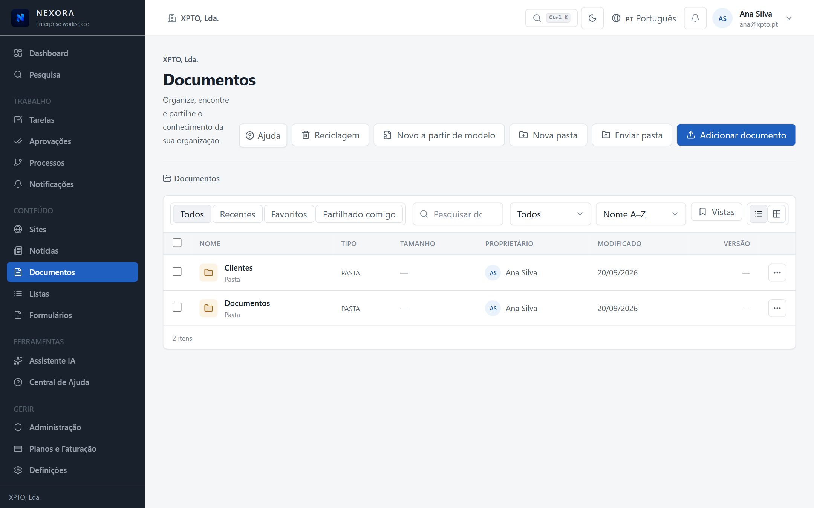
Listas são bases de dados simples — tabelas com colunas à medida, tipo "mini-Excel" dentro da organização. Na XPTO existem duas: "Clientes" (Nome, NIF, Email, Setor, Estado) e "Fornecedores".
lists.view); criar/editar estrutura exige lists.manage (Bruno e Ana).O Bruno desenhou a estrutura da lista "Clientes". A Carla adiciona e atualiza os registos dos clientes que acompanha. A Ana exporta o CSV mensalmente para a contabilidade externa.
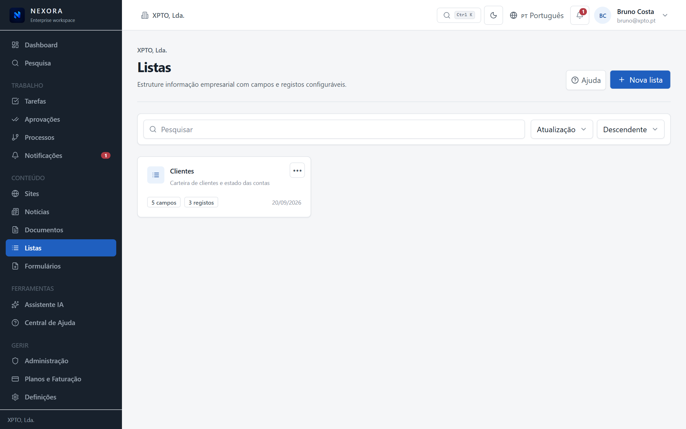
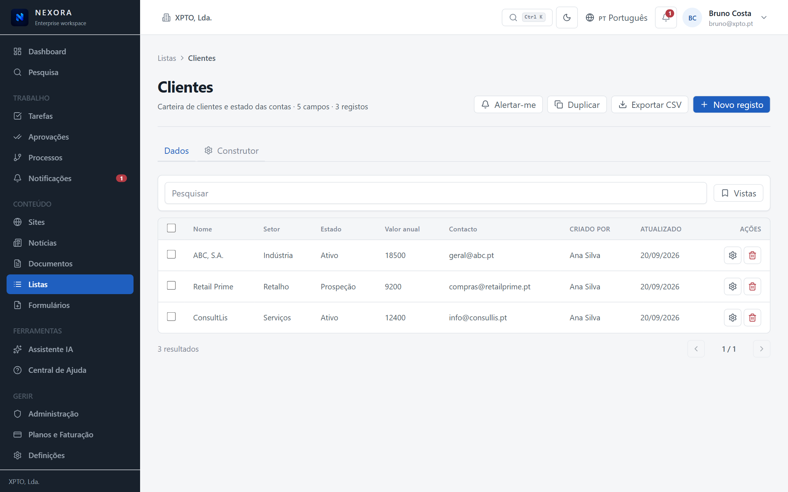
Formulários personalizados para recolher dados estruturados — internos ou partilháveis.
O Bruno criou o formulário "Pedido de Despesa" com campos: valor, categoria, justificação e fatura anexa. A Carla submete os pedidos dela — cada submissão alimenta depois o workflow de aprovação de despesas (secção 10). Um segundo formulário, "Novo Cliente", recolhe os dados iniciais que depois entram na lista de Clientes.
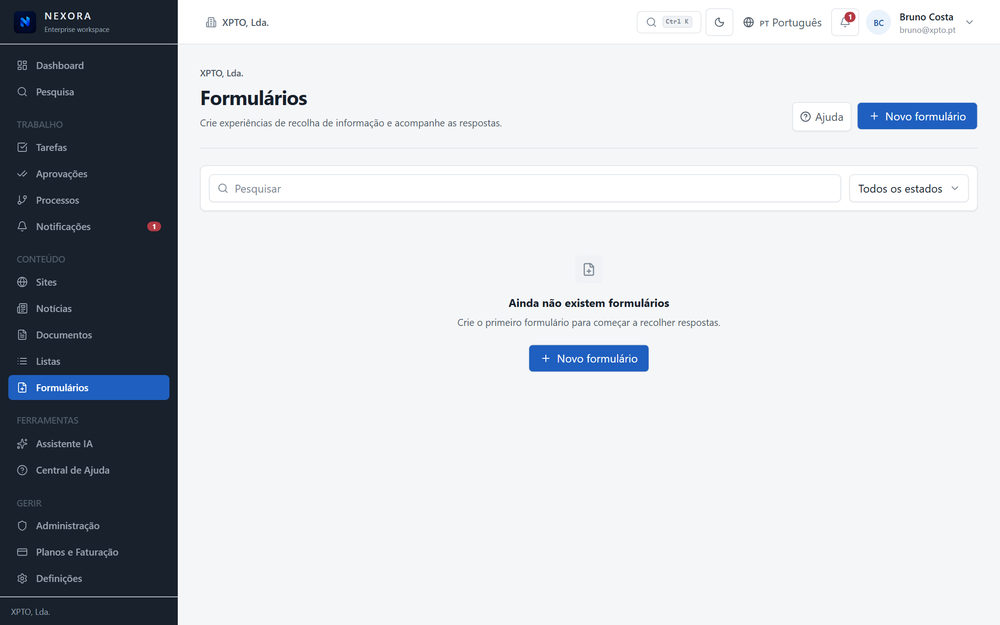
Gestão de trabalho do dia a dia: tarefas com título, descrição, prioridade (Baixa, Normal, Alta, Urgente), data-limite, responsável e estado — agrupáveis em projetos.
O Bruno distribui trabalho: "Carla — rever proposta ABC (Alta, até sexta)". A Carla vê-a no topo das suas tarefas, comenta dúvidas e marca-a como concluída. A Ana acompanha a distribuição de tarefas no widget do dashboard.
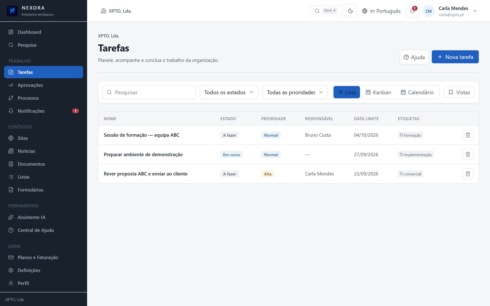
Workflows automatizam processos de negócio: sequências de passos por onde um pedido passa até ser concluído — aprovações, revisões, notificações.
Cada vez que o processo é iniciado cria-se uma instância: segue os passos em ordem, regista quem decidiu o quê e quando, e pode ser cancelada. O histórico da instância mostra o percurso completo.
| # | Passo | Responsável |
|---|---|---|
| 1 | Início — submissão do pedido (do formulário "Pedido de Despesa") | Qualquer membro |
| 2 | Aprovação do gestor | Bruno |
| 3 | Aprovação final (valores > 500€) | Ana |
| 4 | Fim — despesa aprovada ou rejeitada | — |
A Carla submete uma despesa de 200€ → o Bruno recebe a aprovação → aprova → a instância termina como aprovada. Se fosse 800€, depois do Bruno ainda passaria pela Ana.
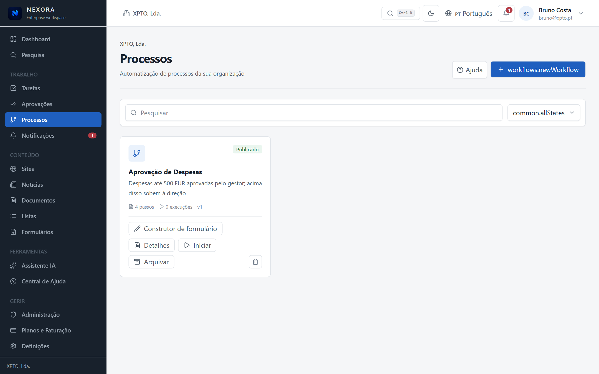
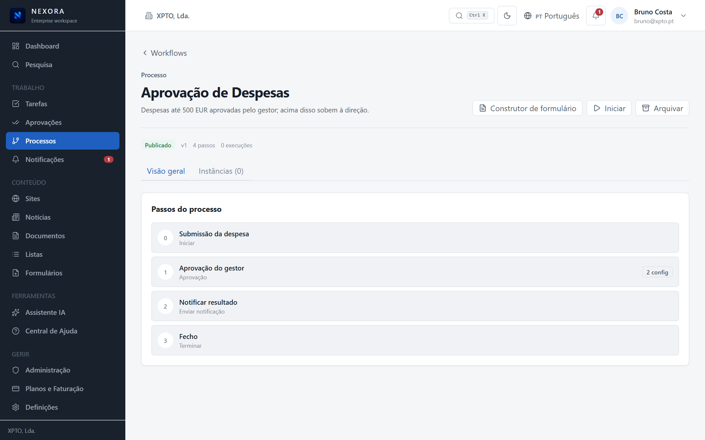
A caixa de entrada de decisões. Cada passo de aprovação pendente aparece aqui, atribuído a quem deve decidir.
O Bruno abre Aprovações todas as manhãs: vê as despesas pendentes da equipa, aprova duas, rejeita uma ("falta a fatura — reenviar") e delega na Ana uma decisão que ultrapassa a sua alçada. A Carla recebe notificação do resultado de cada decisão sobre os seus pedidos.
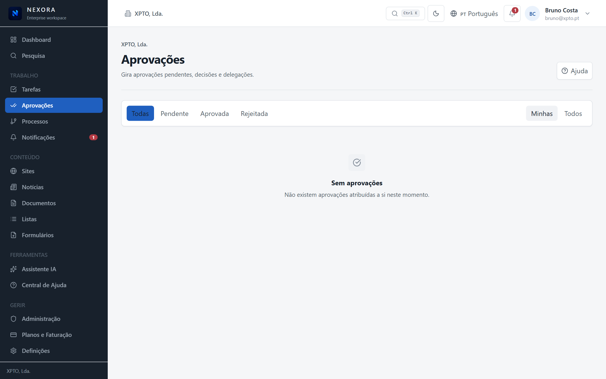
Sites internos — mini-portais da organização com páginas e widgets. Na XPTO existe o "Portal XPTO": página inicial com as notícias, documentos-chave e links rápidos da empresa.
O Bruno mantém o Portal XPTO: uma página "Bem-vindo" com os procedimentos internos, uma página "Clientes" com um widget ligado à lista de Clientes, e outra "Recursos" com os templates de documentos. A Carla consulta-o diariamente; a Ana tem direitos de edição mas raramente precisa de os usar.
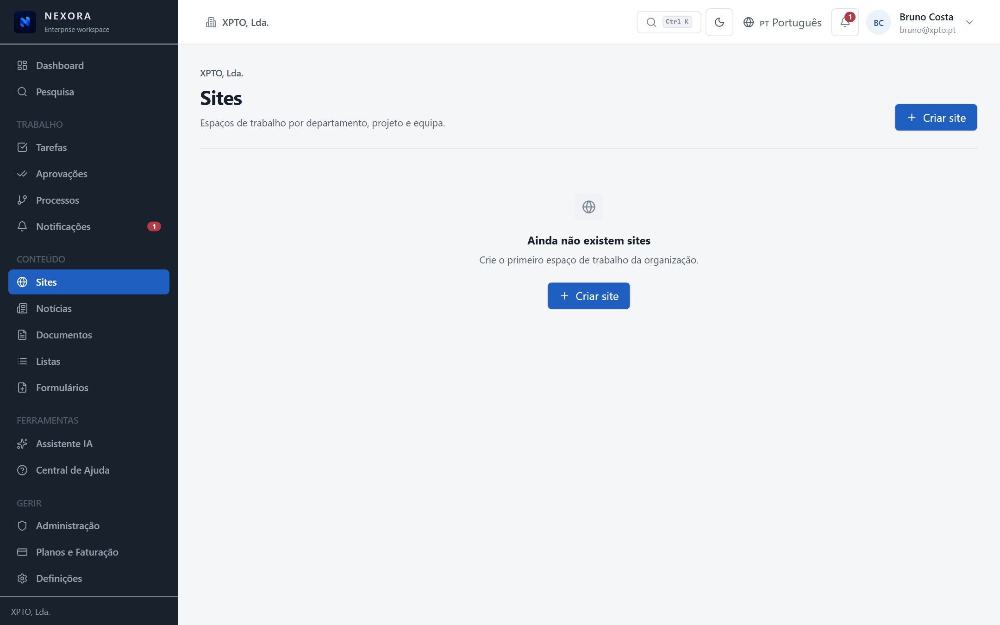
Comunicação interna: artigos publicados na organização — avisos, novidades, comunicados.
news.manage — Bruno e Ana).A Ana publica "Novo processo de despesas — ler antes de submeter". Toda a equipa vê a notícia no feed e pode comentar.
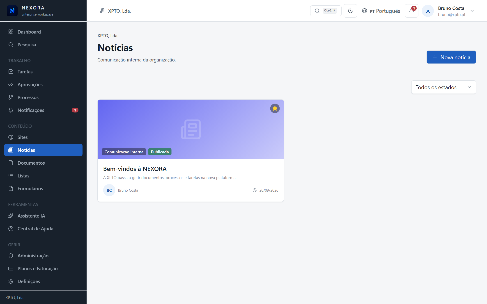
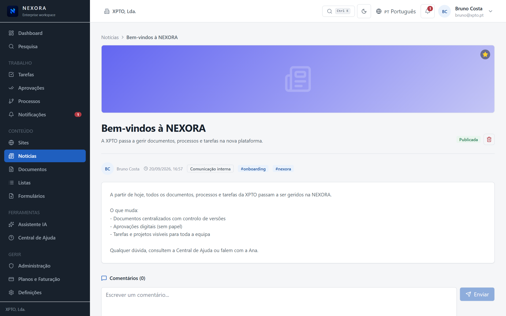
Pesquisa global em toda a organização — documentos, pastas, tarefas, listas, formulários, workflows, sites, notícias.
A Carla escreve "ABC" — encontra a pasta do cliente, o contrato, a tarefa de revisão e a lista onde está o contacto. Sem sair do teclado: Ctrl K → "ABC" → ↓ Enter.
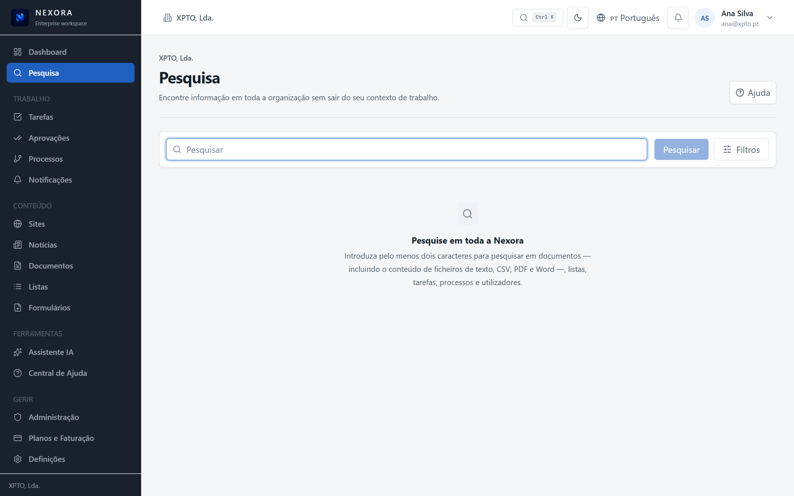
Centro de notificações por utilizador: atribuições de tarefas, aprovações a decidir, resultados de aprovações, menções e alertas do sistema.
Quando o Bruno aprova a despesa da Carla, ela recebe notificação imediata. Quando a Ana atribui uma tarefa ao Bruno, o contador dele incrementa.
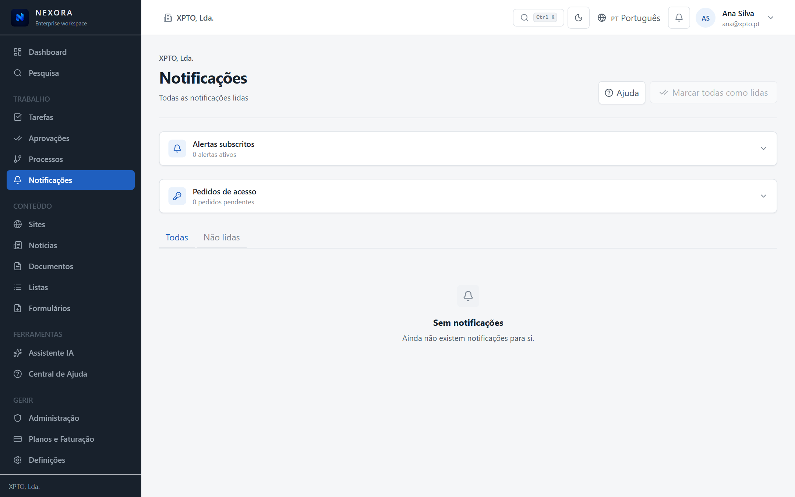
O NEXORA inclui um assistente de IA integrado e consciente das permissões — só acede ao que o utilizador pode ver. Na XPTO está configurado com um modelo externo (Groq/OpenAI-compatible); sem chave configurada funciona um modo local baseado em regras.
Na página de um documento, a IA pode (sempre respeitando o acesso do utilizador):
| Operação | O que faz |
|---|---|
| Resumir | Gera resumo + palavras-chave + classificação do documento. |
| Classificar | Sugere categoria (Contrato, Fatura, RH...) e keywords. |
| Perguntas (Q&A) | Responde a perguntas sobre o conteúdo do documento. |
| Sugerir metadados | Propõe valores para os campos de metadados. |
A IA pode propor e depois materializar estruturas completas:
A Carla usa a IA para resumir contratos longos antes de os rever. O Bruno criou a lista "Fornecedores" com uma frase no chat. A Ana pede um relatório mensal de atividade ao assistente.
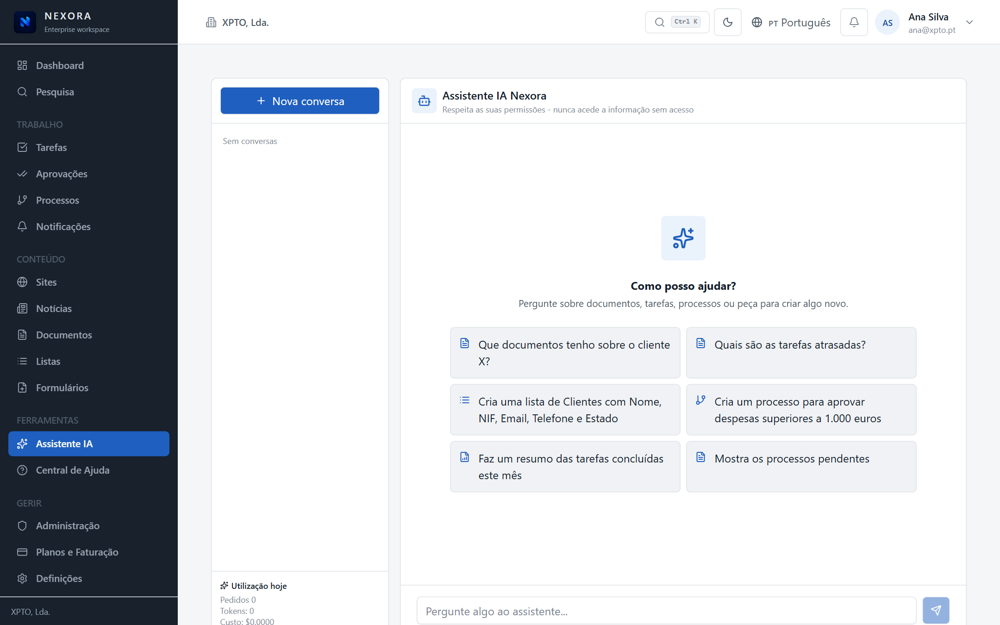
Entrada: barra lateral → Gerir → Administração (visível apenas a quem tem permissões administrativas). Página-hub com 9 áreas:
Agrupamentos de membros (ex.: "Comercial", "Operações") usados nas permissões de documentos — dar acesso a uma pasta a uma equipa inteira em vez de pessoa a pessoa. A Ana criou a equipa "Consultores" com Bruno e Carla.
Registo completo de ações: data/hora, utilizador, ação, recurso, IP e resultado — com filtros. A Ana vê quem fez o quê: logins, uploads, partilhas, decisões de aprovação, operações de IA.
Notificações automáticas para sistemas externos: quando um evento acontece no NEXORA (documento criado, tarefa concluída...), a organização pode receber um POST HTTP num endpoint configurado — criar, editar, testar e eliminar webhooks.
Regras automáticas da organização — ações desencadeadas por eventos sem intervenção manual.
Mensagens globais que aparecem no dashboard de todos os membros — a Ana publica avisos importantes ("Migração de dados sexta-feira às 18h").
Políticas de conformidade: retenção de documentos, legal holds e registos oficiais (ver secção 6).
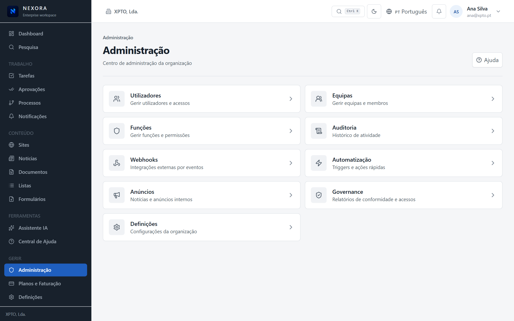
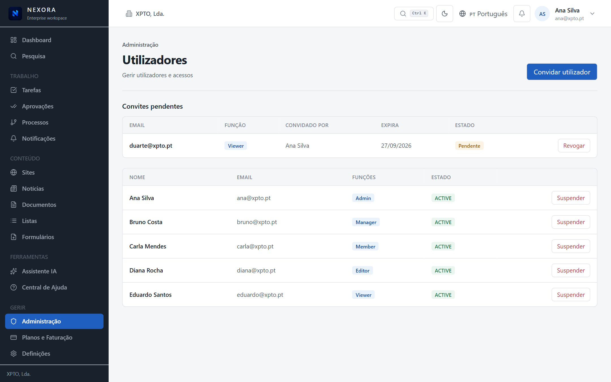
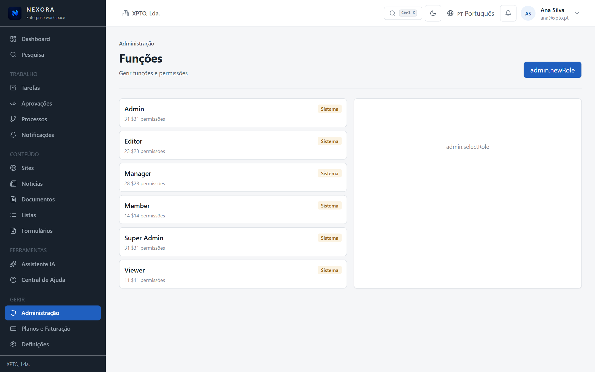
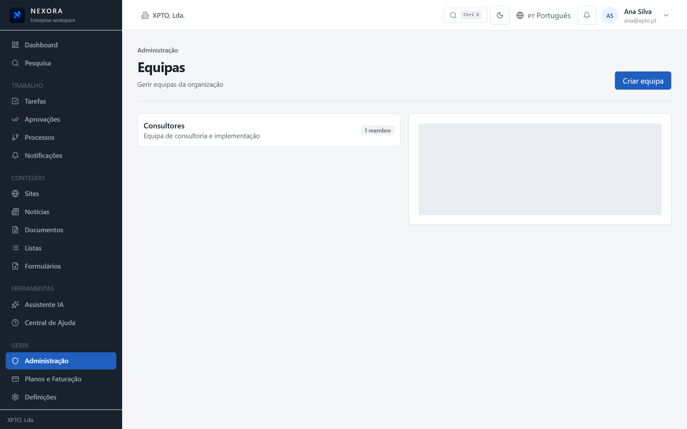
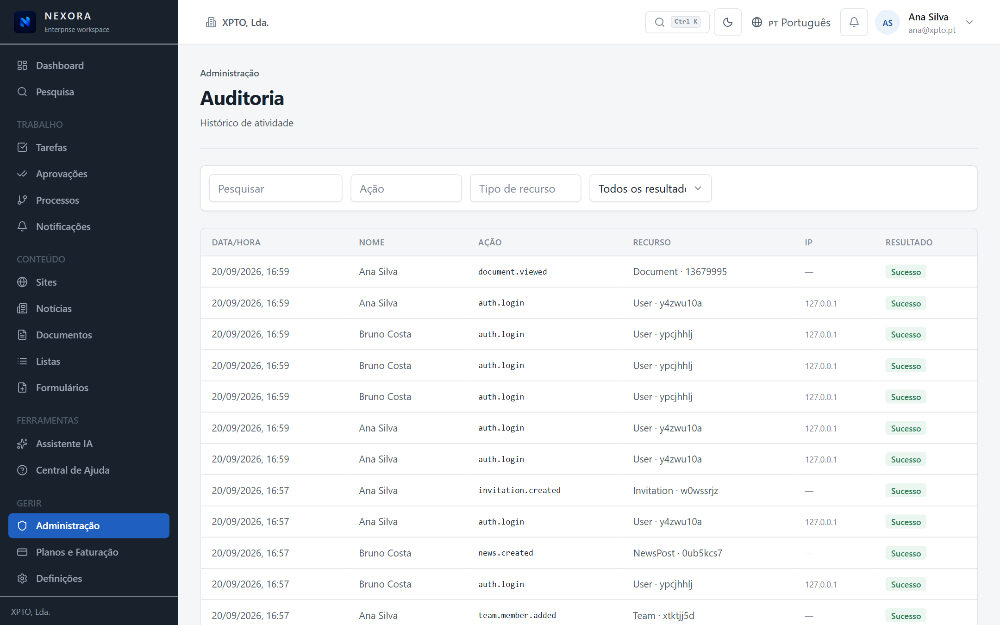
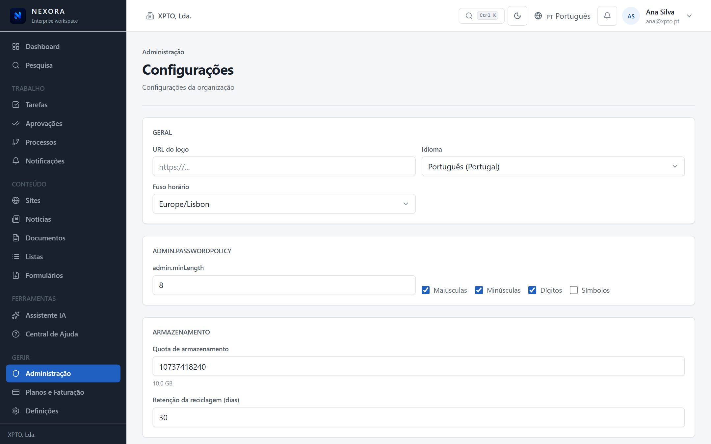
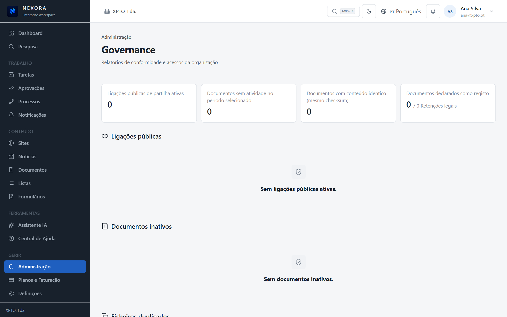
Área Faturação (barra lateral → Gerir):
A XPTO começou no plano Free. Quando chegarem ao limite de utilizadores ou armazenamento, a Ana faz upgrade para o Pro — o SSO e os limites maiores ficam disponíveis no Enterprise.
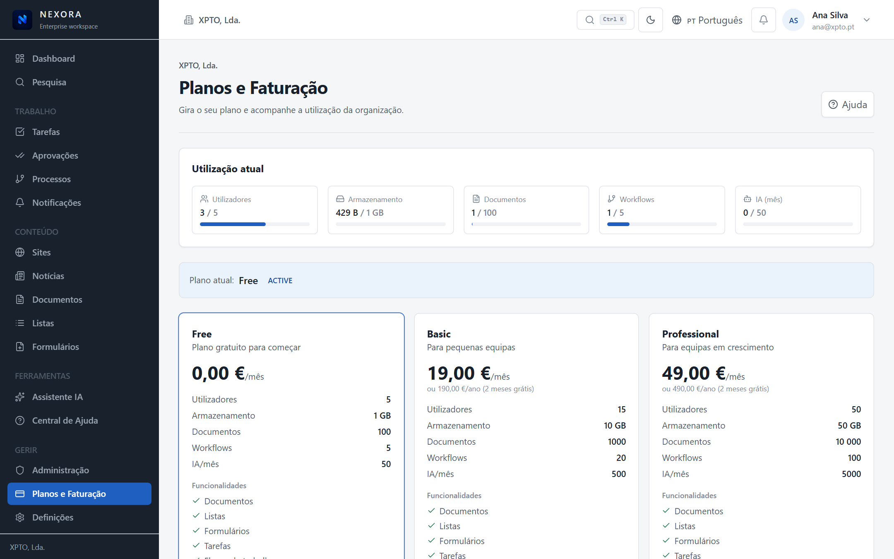
Cinco fluxos reais que mostram como os 5 utilizadores trabalham em conjunto, de ponta a ponta — cada um dentro do que a sua função permite.
| # | Quem | Ação | Onde |
|---|---|---|---|
| 1 | Bruno | Cria a pasta Clientes/ABC S.A./Propostas e instancia o template "Modelo — Proposta Comercial" para dentro dela. | Documentos |
| 2 | Bruno | Atribui tarefa à Carla: "Redigir proposta ABC" — prioridade Alta, prazo sexta-feira. | Tarefas |
| 3 | Carla | Recebe notificação, abre a tarefa, faz check-out do documento e redige a proposta. | Notificações → Documentos |
| 4 | Carla | Faz check-in (nova versão) e comenta: "Versão pronta para revisão". | Documento |
| 5 | Carla | Pede à IA um resumo para verificar os pontos-chave. | Documento → IA |
| 6 | Bruno | Reve o documento, comenta "falta tabela de preços" → Carla adiciona → Bruno aprova internamente. | Comentários |
| 7 | Diana | Reve a formatação final e atualiza o registo "ABC, S.A." na lista de Clientes (estado → Ativo). | Documentos → Listas |
| 8 | Bruno | Cria link de partilha externa com expiração de 7 dias e envia ao cliente. | Partilha |
| 9 | Eduardo | Abre a proposta em modo leitura para acompanhar o negócio — não consegue editar, apagar nem partilhar. | Documentos |
| 10 | Ana | No fim do dia vê na atividade recente todo o percurso — e na auditoria o acesso do cliente via link. | Dashboard → Auditoria |
| # | Quem | Ação | Onde |
|---|---|---|---|
| 1 | Carla | Preenche o formulário "Pedido de Despesa": 230€, categoria Viagem, anexa a fatura. | Formulários |
| 2 | Sistema | Inicia a instância do workflow "Aprovação de Despesas" → passo de aprovação do Bruno. | Workflows |
| 3 | Bruno | Vê a aprovação pendente, consulta o pedido e aprova com comentário "OK — entra no projeto ABC". | Aprovações |
| 4 | Sistema | Como 230€ < 500€, a instância termina aprovada; a Carla é notificada. | Workflows → Notificações |
| 5 | Ana | Exporta a lista de despesas para CSV no fim do mês para a contabilidade. | Listas |
| # | Quem | Ação | Onde |
|---|---|---|---|
| 1 | Ana | Convida duarte@xpto.pt (contabilista externo) com função Viewer — fica pendente na tabela de convites. | Administração → Utilizadores |
| 2 | Duarte | Aceita o convite, cria a conta — no dashboard vê o checklist de onboarding. | Aceitar convite |
| 3 | Bruno | Adiciona-o como leitor no Portal XPTO para consultar as notícias internas. | Sites |
| 4 | Duarte | Consulta a lista de despesas e os documentos financeiros — tudo em modo leitura. | Listas → Documentos |
| 5 | Duarte | Lê a notícia de boas-vindas e explora a Central de Ajuda. | Notícias → Ajuda |
| # | Quem | Ação | Onde |
|---|---|---|---|
| 1 | Diana | Edita a página "Boas-vindas" do site interno com as novas regras de despesas. | Sites → Páginas |
| 2 | Diana | Publica a notícia "Novas regras de despesas em vigor" na categoria Comunicação interna. | Notícias |
| 3 | Sistema | Todos os utilizadores recebem a notificação da nova notícia. | Notificações |
| 4 | Carla, Eduardo | Lêem a notícia — a Carla pode comentar, o Eduardo só lê. | Notícias |
| 5 | Diana | Cria um novo campo "NIF" na lista Clientes e ajusta o formulário de pedido de despesa. | Listas → Formulários |
| Termo | Significado |
|---|---|
| ACL | Lista de controlo de acesso — quem pode ver/editar cada documento ou pasta. |
| Check-out / Check-in | Bloquear um documento para edição exclusiva e devolvê-lo depois. |
| Convite | Ligação segura (7 dias) para alguém entrar na organização com uma função definida. |
| Instância de workflow | Uma execução concreta de um processo — o percurso de um pedido. |
| Legal hold | Retenção legal que impede a eliminação de um documento. |
| Organização | O espaço isolado da empresa dentro do NEXORA. |
| SSO / OIDC | Login único via fornecedor de identidade (Google, Azure AD...). |
| Webhook | Notificação automática HTTP para sistemas externos. |
Cada funcionário precisa da sua conta? Sim — nunca partilhar credenciais. Contas individuais garantem auditoria, permissões e notificações corretas por pessoa.
O admin vê as passwords dos utilizadores? Não — as passwords são guardadas com hash seguro (Argon2id) e ninguém as pode ver. O convite existe precisamente para cada pessoa definir a sua.
Se alguém sair da empresa? Administração → Utilizadores → Suspender — acesso cortado de imediato, dados e histórico preservados.
Um convite expirou — e agora? Enviar um novo convite para o mesmo email; convites expirados não podem ser reutilizados.
Posso pertencer a duas empresas? Sim — a mesma conta pode ser membro de várias organizações; alterna no seletor do cabeçalho.
A IA lê os meus documentos? Só os que tens permissão para abrir — e cada operação fica auditada. Com provider externo (Groq/OpenAI), o conteúdo é enviado ao fornecedor para processamento.
Onde está a ajuda dentro da app? Barra lateral → Ajuda: central com ~80 artigos, pesquisa e guias passo a passo de todas as funcionalidades.